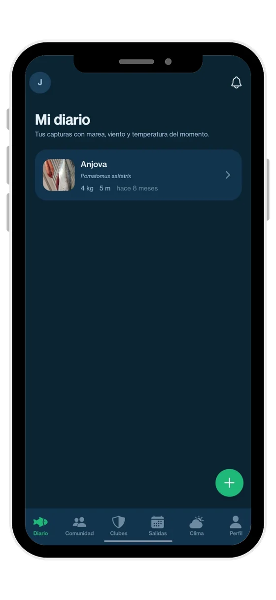

01 · Diario
Todas tus capturas, con el mar de ese día
Cada pieza con su especie, su peso, su profundidad y su foto. Al abrirla ves qué condiciones había cuando entró. Con dos temporadas dentro dejas de fiarte de la memoria y empiezas a ver el patrón.